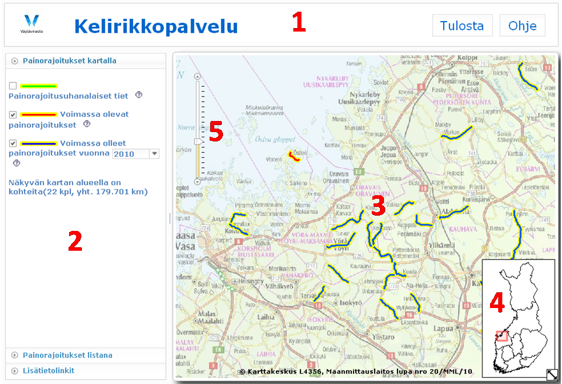

Käyttöliittymän osat

- Sivun yläosassa on otsikkorivi, jossa on otsikon lisäksi tilaa tulosta ja ohje toimintopainikkeille.
- Vasemman laidan ensimmäisessä panelissa on kartalla näytettävien painorajoitusten selite eli legenda, josta käyttäjä voi kytkeä haluamansa painorajoitukset kartalle(/lta). Toisessa panelissa on kartalla näkyvien painorajoitusten tietoja. Kolmas paneli on varattu linkeille.
- Karttakuva koostuu taustakarttapalvelun rasterikarttatasoista, jotka vaihtuvat mittakaavan mukaan. Lisäksi karttakuvalla esitetään painorajoitukset käyttän valintojen perusteella.
- Oikeassa alakulmassa on yleissilmäyskartta, jota klikkaamalla kartta kohdistuu klikattuun kohtaan.
- Vasemmassa yläkulmassa on mittakaavan liukuvalitsin, josta karttaa voidaan lähentää ja loitontaa.
Navigointi
- Siirrä karttaa raahaamalla sitä hiirellä, vasen nappi pohjassa.
- Lähennä kaksoisklikkaamalla tai vasemman yläreunan liukuvalitsinta siirtämällä tai rullahiirellä.
- Lähennä alueeseen rajaamalla alue kartalta shift-painike pohjassa.
- Loitonna vasemman yläreunan liukuvalitsinta siirtämällä, tai rullahiirellä.
- Loitonna alueeksi rajaamalla alue kartalta ctrl- ja shift-painikkeet pohjassa.
- Kohdista kartta toiselle puolen Suomea klikkaamalla oikean alareunan yleissilmäyskarttaa.
Otsikkorivi
Otsikkorivillä on seuraava rakenne:
- "Tulosta"-painikkeella pääsee tulostusnäkymään. Tulostus tapahtuu selaimen omalla tulostustoiminnolla tulostusnäkymästä.
- "Exceliin siirto" Tulostus näkymässä olevan taulukon voi maalata, kopioida(ctrl + c) ja liittää(ctrl + v) exceliin. Maalaaminen kannattaa tehdä aloittamalla taulukon yläpuolisesta legendasta, jotta koko taulukko varmasti tulee kopioitua.
- "Ohje"-painike avaa käyttöliittymän ohjeen.
Vasemman laidan panelit
Vasemman laidan panelit aktivoidaan klikkaamalla hiirellä haluttua panelia.
- "Painorajoitukset kartalla"-panelissa on kolme eri painorajoituksiin kohdituvaa valintaa, jotka voi asettaa valintaruudusta päälle/pois. Aktiivisen panelin otsikko näkyy alleviivattuna ja hieman tummemmalla otsikonvärillä. Lisäksi voimassa olleita painorajoituksia voi katsella eri vuosilta valitsemalla alasvetolaatikosta vuosi. "Painorajoitukset kartalla"- panelissa on kerrottu kuinka näkyvän kartta-alueen kohteiden lukumäärä ja yhteenlaskettu pituus.
- "Painorajoitukset listana"-paneli.
Panelin sisältämästä taulukosta voi siirtyä kartalle tuplaklikkaamalla taulukon riviä, jolloin karttakuva siirtyy kohteeseen. Kohdetta klikkaamalla avautuu ominaisuustietoikkuna. Ominaisuustieto- eli infoikkunan toiminnolla korosta taas voi siirtyä "Painorajoitukset listana"- paneelin taulukkoon, josta lisää infoikkunan toiminnallisuudessa.
- "Lisätietolinkit"-paneli sisältää linkkejä.
Infoikkunan toiminnallisuus
Infoikkuna avautuu näkymään klikattaessa kohdetta hiiren vasemmalla näppäimellä. Mikäli klikatussa kohdassa on useampia kohteita, ne luetaan allekkain taulukkoon. Painorajoitukset jaetaan myös eri välilehdille jaoteltuna seuraavasti:
- Uhanalaiset
- Voimassa olevat
- Voimassa olleet
Ominaisuustiedoissa on korosta linkki, jota klikkaamalla kohde korostuu ja vasemmanpuolen "Painorajoitukset listana"- panelin taulukon vastaava rivi korostuu. Toisen kerran korosta linkkiä klikattaessa kohteen korostus kartalla häviää tai kun infoikkuna suljetaan.